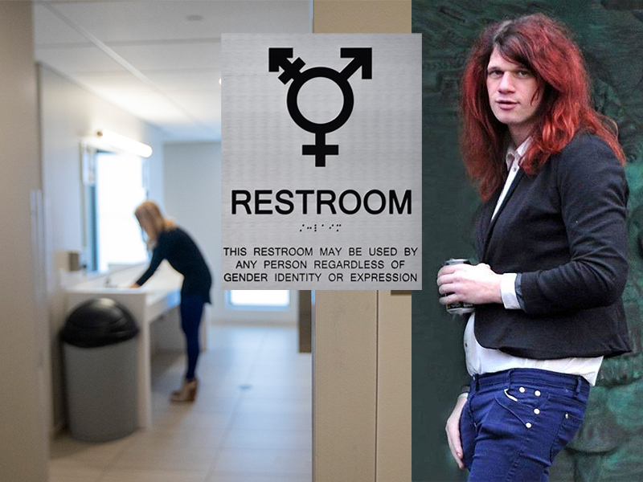

Redefining Sex: The Forced Desegregation of Bathrooms
- Category: Academic
- Client: University of Washington
- Project date: 26 February, 2017
- Project URL: https://ghost.io
This essay considers ethical implications surrounding the recent top-down approach to make public bathrooms and locker rooms "gender neutral". My central thesis argues that legal mandates which allow people to choose such facilities based on the subjective conception of gender identity, defy an accepted moral standard which provides physical and psychological safety to women and children.